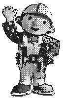
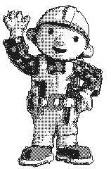

V3 dithered photo (128)
dithered photo (128)
dithered photo (128)V6

dithered photo (200)F5 flat tones (160)
flat tones (160)
flat tones (160)F7 flat tones, white face (200)
flat tones, white face (200)
flat tones, white face (200)F8 flat tones, white face (160)
flat tones, white face (160)
flat tones, white face (160)F9

flat tones, white face (240)